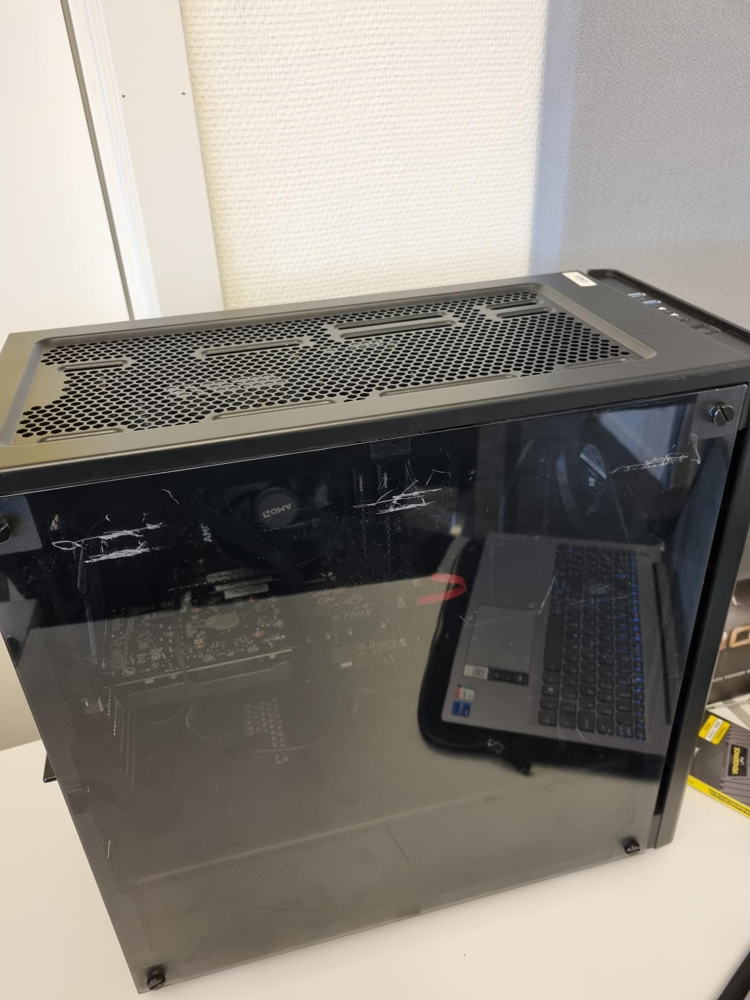
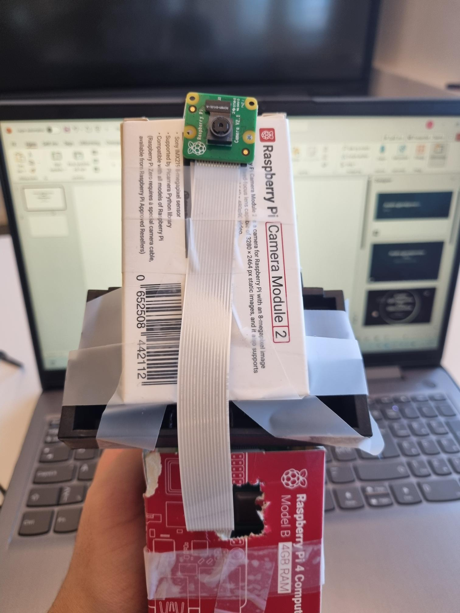
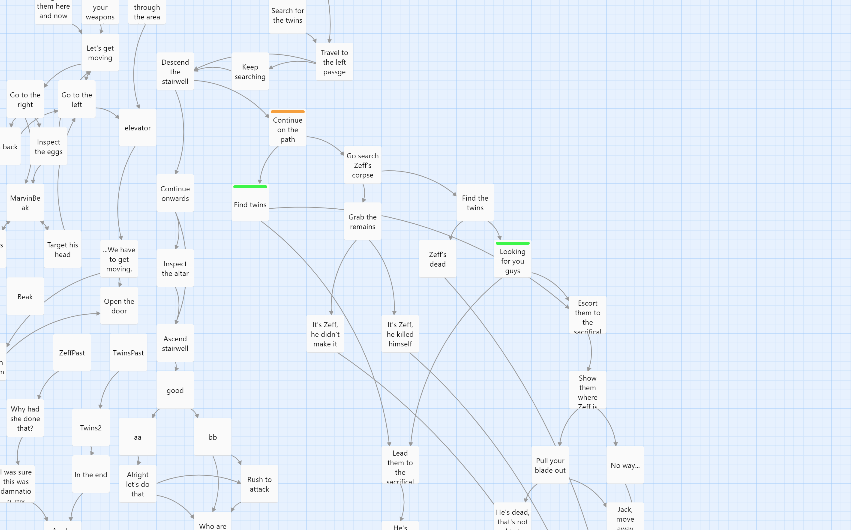
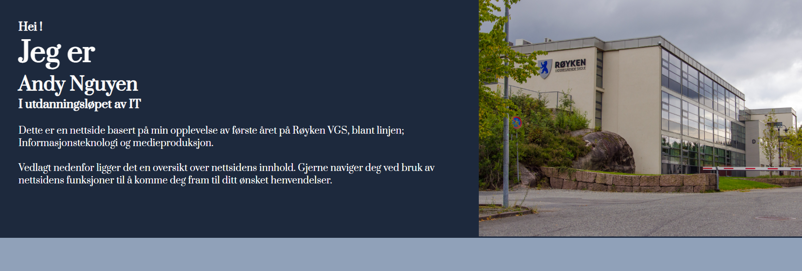

Prosjekter/praksisuke
Her ligger det i detalje prosjekter/praksis opplevelsen som jeg har vært inne om, og har fått jobbet med i denne skoleåret. Prosjektene i denne siden er oftest sett fordelt mellom forskjellig, og derfor kan være tverrfaglig mellom 2 eller flere fag eller bare blant en fag.
Uke 47: Prosjektuke - Yrkesfaglig Fordypning
I uke 47, jobbet vi alle med til å sette opp PC med delene skolen fordelte til oss. Denne prosjektet gikk utover hele uket, og dersom vi ble ferdig før tidsfristen, fikk vi utføre LAN og spille sammen.
Dette var det aller første opplevelsen jeg hadde med å sette opp PC, og dermed ifølge prosjektet fikk jeg utviklet meg i forståelse for oppsettet, og til slutt klarte å sette opp PC-en.

Utplassering - Yrkesfaglig Fordypning
Mellom uke 50 til uke 10 (neste år/2025), forsøkte vi å få skaffet oss praksisplass hos en virksomheten som jobber primært sett med IT. Denne søket hadde tatt meg flere uker, men til slutt fikk jeg tilbud hos bedriften Advania. Hos bedriften vårt, skulle vi være utplassert i 3 uker, (ukene 10-12) der hos Advania, fikk jeg arbeidet av å sette opp PC-er, fikk være med på arbeidsmiljøen og generelt fikk en forståelse for hvordan arbeidslivet skulle være.
Alt i alt, var dette en veldig stressende opplevelse med å sørge å søke for praksisplass, men i det jeg fikk tilbud for en var det en veldig hyggelig og lærerikt opplevelse hos bedriften. Jeg har skrevet i detalje hva jeg har drevet med underveis denne perioden hos bloggen min.

JavaScript tekstbasert spill - Yrkesfaglig Fordypning
En JavaScript spill jeg utviklet med inspirasjon fra YouTube tutorials, og har egen produserte funksjoner som slag, salg av varer og generell navigasjon gjennom det fiktive verden sammen med å utvikle spilleren i styrke.
Vi jobbet med denne prosjekten i ukene etter vi fikk oss tilbudet for praksisplass, og dermed sørget jeg for arbeidet mellom ukene 4 til 10. Denne prosjektet sitt grunnleggende kodestruktur kom opprinnelig fra Freecodecamp.org sitt JavaScript øvelse RPG - Dragon Repeller, men dessverre finner jeg ikke lenken til den opprinnelig YouTube videoen.
Tverrfaglig prosjekt - Teknologiforståelse & Prod. og historiefortelling
En selvvalgt prosjekt som vi kunne fordype oss i mellom timene av Teknologiforståelse og Prod. og historiefortelling i ukene 13-15. Jeg valgte å arbeide med med Raspberry PI datamaskinen, der jeg produserte ansikts-gjenkjenning program innenfor datamaskinen, og fikk den å fungere ved bruk av koblet kamera på selve datamaskinen.
Jeg fikk til ulike ferdigheter, som å kunne kontrollere Raspberry PI datamaskinen trådløs med hoved PC-en ifølge bruk av VNC kobling, og feil søking underveis, der jeg sleit med forståelse av virtuelle områder blant nedlastningen av Python ressurser/libaries.
Til slutt, fikk jeg lært mye av denne prosjekten, blant forståelse for Python og virtuelle områder, teknikk for feil søking og tilkobling trådløs med VNC.

Twine: Interaktivt fortelling - Prod. og historiefortelling
I Prod. og historiefortelling arbeidet vi kort med å lage en interaktivt historie ifølge programmet Twine, som oversetter hoved funksjonene innenfor programmet som styrer historiefortelling
Det var en spennede prosjekt til å drive med, ifølge vi fikk oss lære ny program som erstatter vår input til HTML elementer, og ga oss mulighet til å være kreativt ifølge historiefortelling og integrasjon av interaktivitet.
Jeg lærte en grei del om hvordan de ulike kodespråk er oppfattet ifølge min erfaring med JavaScript, der i denne prosjektet oppfattet jeg noen ganger at Twine var enkel å bruke, men dermed mot mere avanserte endringer ble det litt vanskelig å forstå.

2D platformer - Prod. & Historiefortelling
Det siste prosjektet vi drev med på Prod. & Historiefortelling. Vi som gruppe av 4 stykker, samarbeidet til å lage en 2D platformer spill på Godot spill-motoren. Jeg fikk fordelt rollen til å lage grafikk i forhold til spillet, der jeg fikk til å lage karakteren, og ifølge ulike tilstand til bevegelse redigerte jeg på karakteren slik at det tilpasser til scenen.
Vi følgte en tutorial til å lage 2D platformer spill, nemlig en tutorial laget av Brackeys
Jeg har lært mye blant denne prosjektet, nemlig det å tilpasse grafikk til ulike størrelse blant behov av spillet, og litt om hvordan vi kan endre på fargene og tilstand av hovedkarakteren slik at det kan være dynamisk og passer godt til spillet.
Nettside: Oppsummer det jeg har lært/ vært stolt av denne året? - Tverrfaglig prosjekt
En tverrfaglig prosjekt mellom de 3 fagene: Teknologiforståelse, Prod. & Historiefortelling og Programmering. Oppgaven er en konklusjon til skoleåret, og innebærer å lage en nettside ved bruk av programmerings ferdigheter til å fortelle opplevelsen din av første skoleåret blant Informasjonsteknologi og medieproduksjon.
Det var en prosjekt som innebærte det å bruke alt det vi har lært gjennom skoleåret, og oppsummere det med en nettside som forteller hva vi har drevet med. Progresjon blant nettsiden var sakte, men kom etter mye arbeid og tid satt. Vi jobbet med denne for omtrent 3 uker der timene brukt på de programfagene var fordelt til denne prosjektet.
Jeg måtte gjøre mange endringer blant designet over hele nettsiden, men til slutt fikk jeg en konklusjon som jeg var fornøyd med. Alt i alt, ga denne nettsiden meg en refleksjon gjennom alt jeg lærte denne året, og hvor mye jeg utviklet meg over denne året.

Sluttrefleksjon - Hva har jeg lært?
Underveis de ulike prosjekter har jeg lært mye om ulike teknikk og forståelse blant de ulike emner som prosjekter gikk utover, der noen eksempler kan være: ferdigheter blant programmering og feilsøking, og jobb opplevelse ifølge utplassering.
Til slutt er jeg veldig stolt av å få gjort disse ulike prosjekter, der jeg fikk styre min egen progresjon gjennom utdanningen min selv, og komme med egen produserte løsninger. Punkter/emner jeg er veldig stolt av å få gjort/drivet med er følgende: